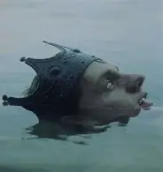

"Las Perdidas" es el nombre con el que se conoce al proyecto artístico integrado actualmente por Wendy Guevara, Paola Suárez y Karina Torres, y anteriormente también por Kimberly Irene, youtubers, influencers, actrices, empresarias y cantantes transgénero mexicanas originarias de León, Guanajuato, que alcanzaron notoriedad en redes sociales e internet a mediados de la década de los años 2010, para posteriormente incursionar en la televisión y la música. Paola y Wendy saltaron a la fama en el año 2017 gracias a un video que se viralizo en redes y que fue galardonado con un premio MTV MIAW en la categoría "Lords Ladys del año" en ese mismo año. A partir de ese momento, comenzaron a compartir contenido en diversos canales de YouTube, alcanzando gran popularidad. Al dúo se sumó finalmente Kimberly "La más preciosa" quién, aunque no aparece en el video viral original donde están perdidas, comenzó a publicar contenido con ellas poco después. Además de compartir contenido en diversas redes (principalmente YouTube, Instagram y TikTok), las 3 han incursionado en diversos ámbitos como la televisión, la música, los shows de transformismo, el mundo empresarial y el modelaje.
Lista de Países Ordenada
Lista de Frutas Desordenada